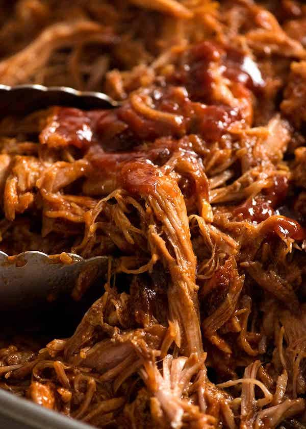

Smoked Pulled Pork

Description
Pulled pork is a succulent dish achieved by cooking a good piece of pork until it
starts to fall apart. Finished with BBQ sauce, this dish will literally melt in
your mouth!
Ingredients
- Pork Butt/Shoulder/Scotch Fillet - Talk to your butcher.
- Mustard
- Your favourite BBQ Rub
- Your favourite BBQ Sauce
- Apple Wood
Steps
- Preheat your smoker to about 275f
- Apply a thin layer of mustard to the meat as a binder, then coat generously with rub.
- Put Pork into the smoker with internal thermometer and cook until internal temperature is 165f
- Wrap Pork with aluminium foil, then put it back in the smoker.
- Cook until internal temperature is 210f.
- Allow to rest for at least half an hour before pulling the meat apart.